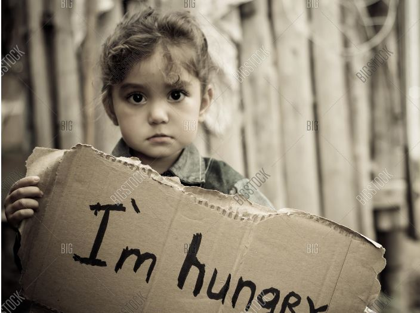

India has the highest prevalence of wasted children under five years in
the world, which reflects acute undernutrition, according to the Global
Hunger Index 2020. The situation has worsened in the 2015-19 period,
when the prevalence of child wasting was 17.3%, in comparison to
2010-14, when it was 15.1%.
Overall, India ranks 94 out of 107 countries in the Index, lower than
neighbours such as Bangladesh (75) and Pakistan (88). 2020 scores
reflect data from 2015-19. The Index, which was released on Friday, is a
peer-reviewed report released annually by Concern Worldwide and
Welthungerhilfe.
It uses four parameters to determine its scores. India fares worst in
child wasting (low weight for height, reflecting acute undernutrition)
and child stunting (low height for age, reflecting chronic
undernutrition), which together make up a third of the total score.
Although it is still in the poorest category, however, child stunting
has actually improved significantly, from 54% in 2000 to less than 35%
now. Child wasting, on the other hand, has not improved in the last two
decades, and is rather worse than it was decade ago.